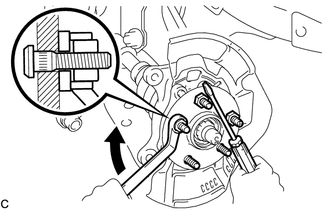

RM3140CG
_52
动力传动系
_023985
车桥和差速器
_0116099
前桥轮毂螺栓
A
车桥和差速器 前桥轮毂螺栓 更换
注意/小心/提示
- 提示：
- ·
右侧操作程序与左侧相同。
·下面程序适用于左侧。
程序

 2.分离前盘式制动器制动钳总成
2.分离前盘式制动器制动钳总成
a.
拆下 2 个螺栓，并从转向节上分离前盘式制动器制动钳总成。
- 备注：
-
使用钢丝或同等工具，避免前盘式制动器制动钳总成悬挂在前挠性软管上。
4.拆卸前桥轮毂螺栓
a.
2.115,0.958 2.115,0.677
2.115,0.677 2.771,0.677
true
2.417,1.115 2.417,0.688
true
0.833,1.448 1.198,1.448
1.198,1.448 1.542,1.333
true
0.542,1.375 0.927,1.552
0.385,0.177
10
false
SST
2.802,0.594 3.115,0.75
0.313,0.156
10
false
*a
| *a | 连接螺母 |
如图所示，将 2 个连接螺母暂时安装到前桥轮毂螺栓上。
- 推荐连接螺母:
螺纹直径：12.0 mm (0.472 in.)
螺距：1.5 mm (0.0591 in.)
- 备注：
-
安装连接螺母，以防损坏前桥轮毂螺栓。
b.
使用 SST 和螺丝刀或同等工具固定前桥轮毂，然后拆下前桥轮毂螺栓。
- SST
- 09611-12010
- 备注：
-
不要损坏前桥轮毂螺栓的螺纹。
5.安装前桥轮毂螺栓
a.
将新的前桥轮毂螺栓暂时安装到前桥轮毂上。
b.

0.677,1.552 0.677,0.938
true
0.99,1.448 0.99,0.833
true
0.927,1.458 1.24,1.615
0.313,0.156
10
false
*a
0.615,1.573 0.927,1.729
0.313,0.156
10
false
*b
| *a | 连接螺母 |
| *b | 垫圈 |
如图所示，将垫圈和连接螺母安装到新的前桥轮毂螺栓上。
- 推荐连接螺母:
螺纹直径：12.0 mm (0.472 in.)
螺距：1.5 mm (0.0591 in.)
- 提示：
-
垫圈推荐厚度为 5 mm (0.197 in.) 或更大。
c.
使用螺丝刀或同等工具固定前桥轮毂，然后通过紧固连接螺母安装轮毂螺栓。
- 备注：
- ·
安装连接螺母，以防损坏前桥轮毂螺栓。
·不要损坏前桥轮毂螺栓的螺纹。
d.
从 3 个前桥轮毂螺栓上拆下 3 个连接螺母。
7.安装前盘式制动器制动钳总成
a.
用 2 个螺栓将前盘式制动器制动钳总成安装到转向节上。
- 扭矩：
- 106.8 N*m (1089 kgf*cm, 79 ft.*lbf)
- 备注：
-
安装前盘式制动器制动钳总成时不要使前挠性软管扭曲。